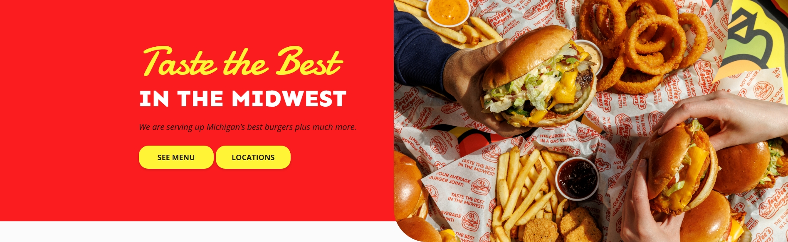
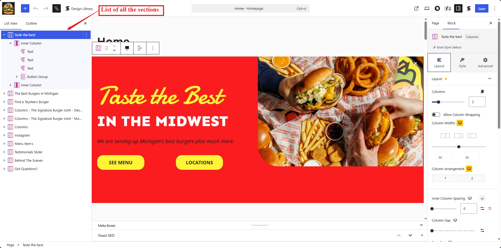
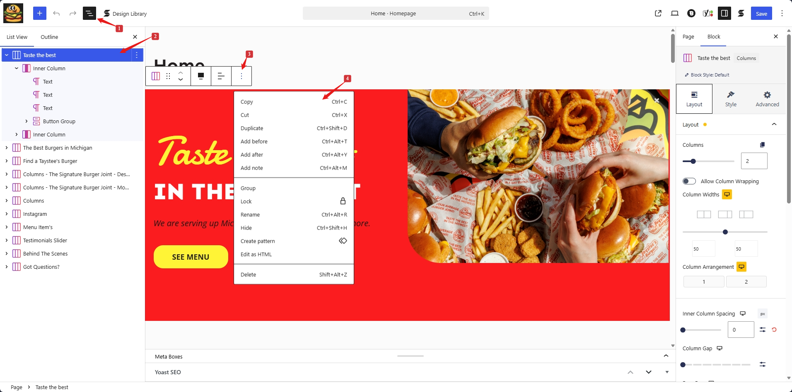

WP Blocks
Hero Section

Copying Blocks
Follow these steps to copy a block in the page builder:
-
Select the block column
Click on the column containing the block you want to copy.

-
Copy the block
Click the three dots on the block toolbar and select Copy.

-
Paste the block on a new page
- Open the page where you want to paste the block.
- Press:
- Command + V on Mac
- Ctrl + V on Windows